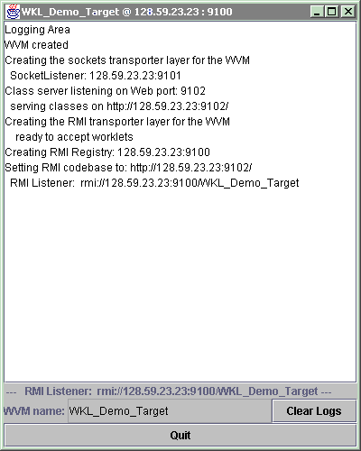
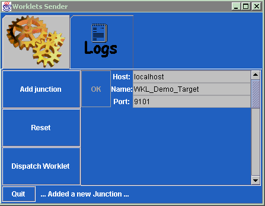

Worklets were originally designed as workflow mobile agents, but have been
expanded to other applications. The Worklets system is designed as a mobile
code infrastructure intended for dynamic re-configuration of third-party
systems. Instead of bringing down entire components of a distributed system
at runtime for recompilation, worklets carrying Java mobile code can be
injected transparently into system components for incremental adaptation.
Host components must include, or be wrapped with, a generic worklet virtual
machine and host-specific adapter exposing indigenous reconfiguration capabilities.
What is this demo?
A Target Instance
This is what you see.

A Sender Instance
This is what you see.

How do I use Worklets now?
class myWorkletJunction { myWorkletJunction(String rHost, String rName, int rPort)
{ super(rHost, rName, rPort); } public void execute() { WVM.out.println("\t --- Totally New Component
---"); } }